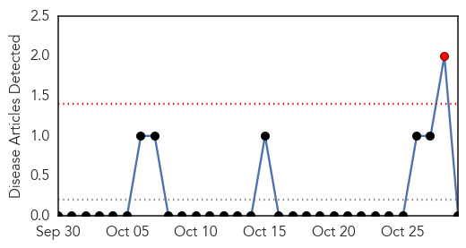
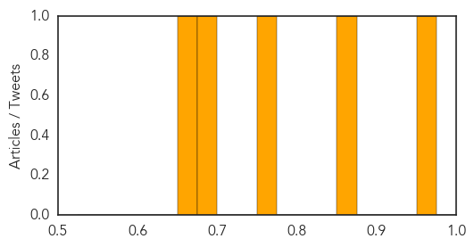

Hemmorhagic Fever
30-Day Web Trend
1 alerts, 0 warnings

30-Day Twitter Trend
0 alerts, 0 warnings

Article Locations

Article Confidences

Top Articles:
-
No articles found for Oct 29, 2015
Top Tweets:
-
No tweets found for Oct 29, 2015
Hepatitis
30-Day Web Trend
4 alerts, 1 warnings

30-Day Twitter Trend
0 alerts, 0 warnings

Article Locations

Article Confidences
Top Articles:
- 0.962
- These shots aren’t just for kids
- 0.853
- Wartime Glasgow study offers hope in Hepatitis C battle
- 0.766
- SGH to screen 350 more patients for hepatitis C, Health News & Top Stories
- 0.691
- Research links bovine leukosis, breast cancer
- 0.659
- Awareness and timely management key to bring down Acute Liver Failure (ALF) mortality: Experts
Top Tweets:
-
No tweets found for Oct 29, 2015